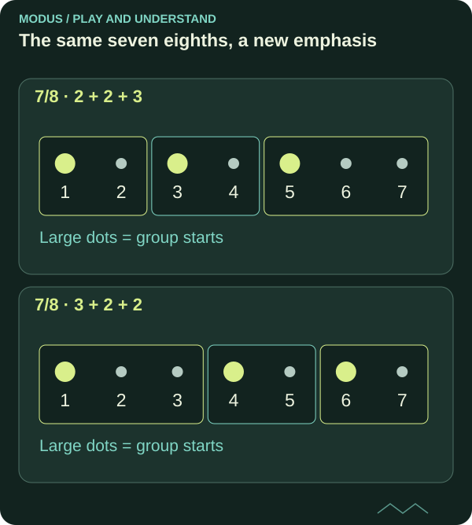

Rhythm in 7/8: groups that feel natural
Seven eighth notes need not feel like a long count to seven. Small groups make it easier to find a groove and keep your direction.

What does 7/8 tell you?
A bar of 7/8 contains seven eighth notes. The upper number in the time signature tells you how many note values the bar contains; the lower number identifies the eighth-note value.
This does not mean all seven pulses need equal emphasis. Grouping the eighth notes lets you feel a larger movement through the bar.

Read the diagram as text
- 7/8 · 2 + 2 + 3: 2+2+3 eighths; accents on 1, 3, 5
- 7/8 · 3 + 2 + 2: 3+2+2 eighths; accents on 1, 4, 6
Try 2 + 2 + 3
A common grouping is two, two and three eighth notes. Count one-two | one-two | one-two-three, placing a stronger accent at the start of each group.
Another option is 3 + 2 + 2. There are still seven eighth notes, but the accent positions change the feel of the bar. You hear different groupings, not a new number of notes.
Let a simple phrase land
Begin on one note. Play or clap the start of each group and keep the inner eighth-note pulse steady. Once that feels comfortable, add short notes or rests between the accents.
Gradually let your melody span several bars. A phrase need not end at every bar line. You can keep the accompaniment’s grouping while giving the melody a longer arc.
Keep the pulse when the accents move
Count seven even eighth notes. In 2+2+3, the group starts are at positions 1, 3 and 5. In 3+2+2, they are at 1, 4 and 6. Clap only these positions while continuing to feel all seven eighth notes.
Switch grouping after four bars while keeping the same tempo. If you speed up in the group of three, return to counting without the instrument before adding notes again.
FROM READING TO PLAYING
Try it yourself.
Clap 2 + 2 + 3 for four bars without speeding up the final group. Then play E on the first eighth note of each group. Switch to 3 + 2 + 2 and notice the difference.
Back to the theory roomCHECK YOUR UNDERSTANDING
What do you remember?
Three questions about what you have read. Get all three right to complete the quiz. Try as many times as you like.
Completion is saved in this browser and shared between Norwegian and English.
You answered all three questions correctly. Take the idea to your instrument.
Back to the article library ↗︎